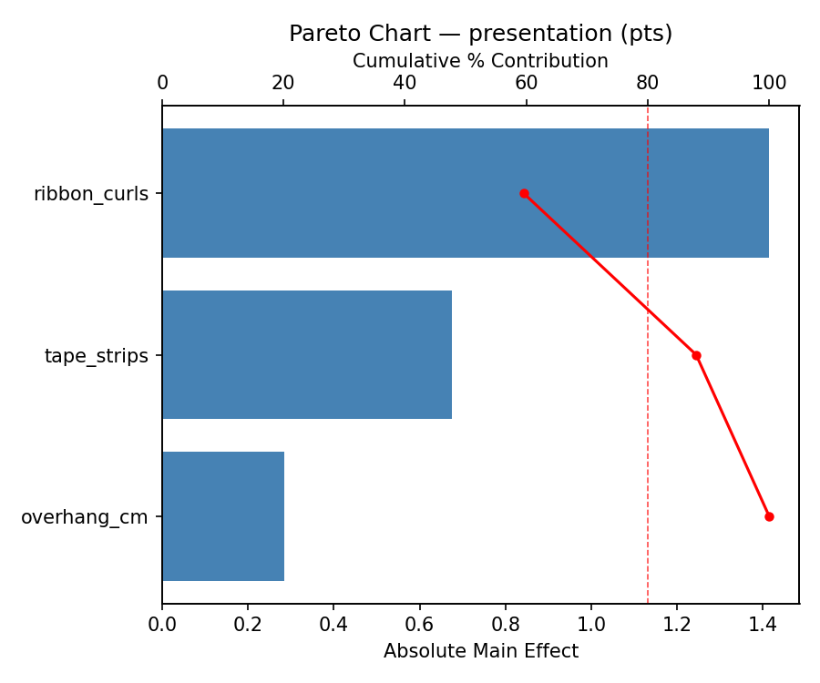
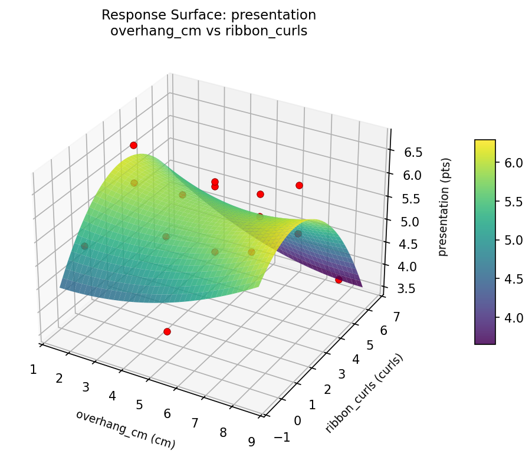
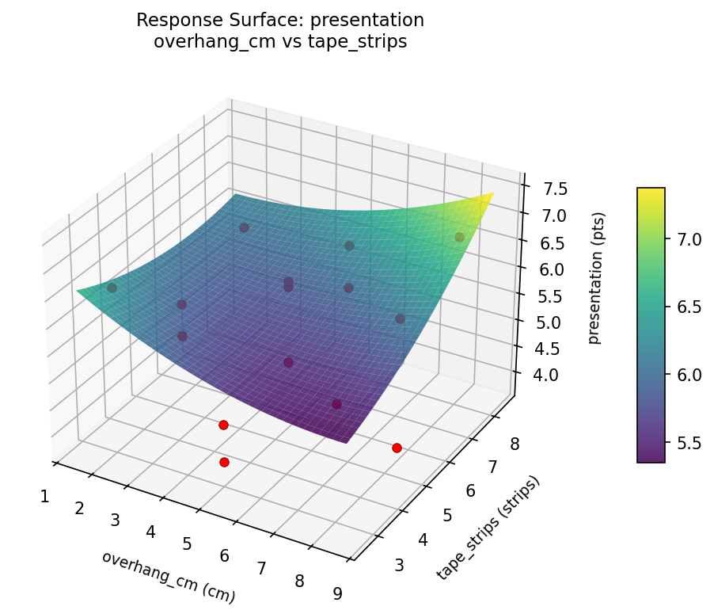
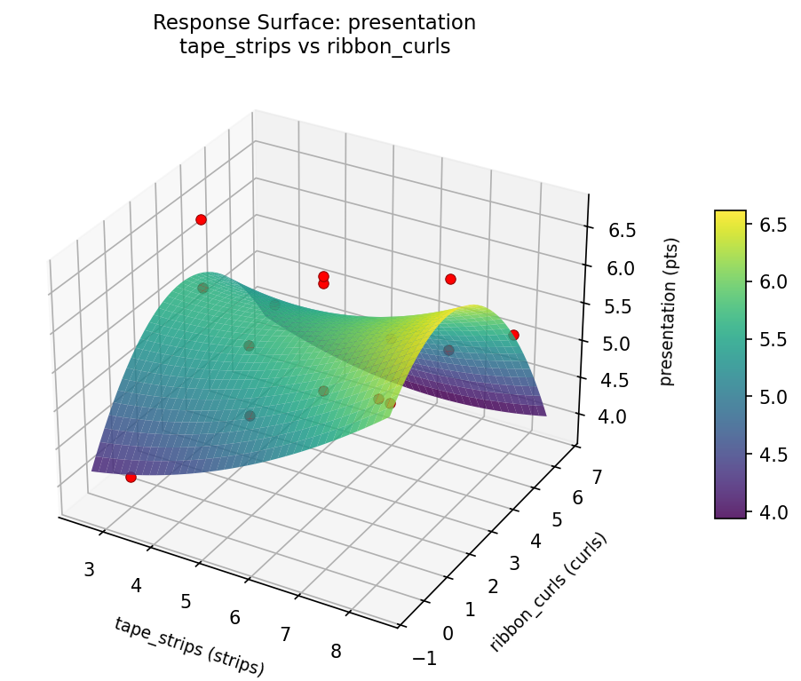
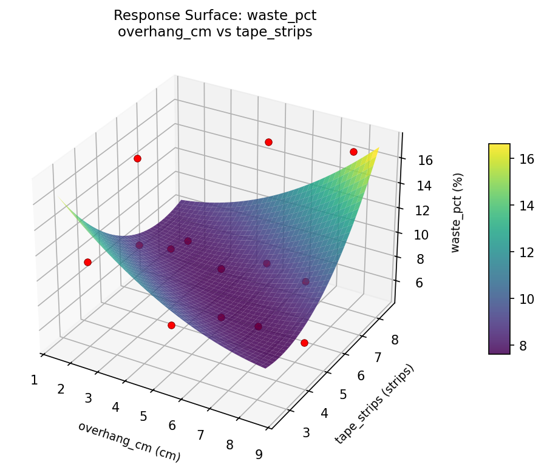

Experimental Setup
Factors
| Factor | Low | High | Unit |
|---|
overhang_cm | 2 | 8 | cm |
tape_strips | 3 | 8 | strips |
ribbon_curls | 0 | 6 | curls |
Fixed: paper_type = glossy, box_size = medium
Responses
| Response | Direction | Unit |
|---|
presentation | ↑ maximize | pts |
waste_pct | ↓ minimize | % |
Configuration
{
"metadata": {
"name": "Gift Wrapping Efficiency",
"description": "Box-Behnken design to maximize presentation quality and minimize paper waste by tuning paper overhang, tape strips, and ribbon curl count"
},
"factors": [
{
"name": "overhang_cm",
"levels": [
"2",
"8"
],
"type": "continuous",
"unit": "cm"
},
{
"name": "tape_strips",
"levels": [
"3",
"8"
],
"type": "continuous",
"unit": "strips"
},
{
"name": "ribbon_curls",
"levels": [
"0",
"6"
],
"type": "continuous",
"unit": "curls"
}
],
"fixed_factors": {
"paper_type": "glossy",
"box_size": "medium"
},
"responses": [
{
"name": "presentation",
"optimize": "maximize",
"unit": "pts"
},
{
"name": "waste_pct",
"optimize": "minimize",
"unit": "%"
}
],
"settings": {
"operation": "box_behnken",
"test_script": "use_cases/249_gift_wrapping/sim.sh"
}
}
Experimental Matrix
The Box-Behnken Design produces 15 runs. Each row is one experiment with specific factor settings.
| Run | overhang_cm | tape_strips | ribbon_curls |
|---|
| 1 | 5 | 3 | 0 |
| 2 | 5 | 5.5 | 3 |
| 3 | 8 | 5.5 | 6 |
| 4 | 8 | 5.5 | 0 |
| 5 | 5 | 5.5 | 3 |
| 6 | 5 | 5.5 | 3 |
| 7 | 2 | 5.5 | 6 |
| 8 | 8 | 3 | 3 |
| 9 | 5 | 3 | 6 |
| 10 | 8 | 8 | 3 |
| 11 | 2 | 5.5 | 0 |
| 12 | 5 | 8 | 6 |
| 13 | 2 | 3 | 3 |
| 14 | 2 | 8 | 3 |
| 15 | 5 | 8 | 0 |
Step-by-Step Workflow
1
Preview the design
$ python doe.py info --config use_cases/249_gift_wrapping/config.json
2
Generate the runner script
$ python doe.py generate --config use_cases/249_gift_wrapping/config.json \
--output use_cases/249_gift_wrapping/results/run.sh --seed 42
3
Execute the experiments
$ bash use_cases/249_gift_wrapping/results/run.sh
4
Analyze results
$ python doe.py analyze --config use_cases/249_gift_wrapping/config.json
5
Get optimization recommendations
$ python doe.py optimize --config use_cases/249_gift_wrapping/config.json
6
Generate the HTML report
$ python doe.py report --config use_cases/249_gift_wrapping/config.json \
--output use_cases/249_gift_wrapping/results/report.html
Features Exercised
| Feature | Value |
|---|
| Design type | box_behnken |
| Factor types | continuous (all 3) |
| Arg style | double-dash |
| Responses | 2 (presentation ↑, waste_pct ↓) |
| Total runs | 15 |
Analysis Results
Generated from actual experiment runs using the DOE Helper Tool.
Response: presentation
Top factors: ribbon_curls (59.5%), tape_strips (28.4%), overhang_cm (12.0%).
Pareto Chart

Main Effects Plot

Response: waste_pct
Top factors: ribbon_curls (55.7%), tape_strips (31.3%), overhang_cm (12.9%).
Pareto Chart

Main Effects Plot

Response Surface Plots
3D surfaces fitted with quadratic RSM. Red dots are observed data points.
presentation overhang cm vs ribbon curls

presentation overhang cm vs tape strips

presentation tape strips vs ribbon curls

waste pct overhang cm vs ribbon curls

waste pct overhang cm vs tape strips

waste pct tape strips vs ribbon curls

Full Analysis Output
RSM surface: rsm_presentation_overhang_cm_vs_tape_strips.png
RSM surface: rsm_presentation_overhang_cm_vs_ribbon_curls.png
RSM surface: rsm_presentation_tape_strips_vs_ribbon_curls.png
RSM surface: rsm_waste_pct_overhang_cm_vs_tape_strips.png
RSM surface: rsm_waste_pct_overhang_cm_vs_ribbon_curls.png
RSM surface: rsm_waste_pct_tape_strips_vs_ribbon_curls.png
=== Main Effects: presentation ===
Factor Effect Std Error % Contribution
--------------------------------------------------------------
ribbon_curls 1.4143 0.2358 59.5%
tape_strips 0.6750 0.2358 28.4%
overhang_cm 0.2857 0.2358 12.0%
=== Summary Statistics: presentation ===
overhang_cm:
Level N Mean Std Min Max
------------------------------------------------------------
2 4 5.6000 0.8042 4.7000 6.6000
5 7 5.3143 0.8764 4.0000 6.3000
8 4 5.6000 1.2675 3.8000 6.7000
tape_strips:
Level N Mean Std Min Max
------------------------------------------------------------
3 4 5.2500 1.1387 4.0000 6.6000
5.5 7 5.3286 0.9552 3.8000 6.3000
8 4 5.9250 0.6185 5.2000 6.7000
ribbon_curls:
Level N Mean Std Min Max
------------------------------------------------------------
0 4 5.3750 0.9946 4.0000 6.2000
3 7 6.0143 0.6517 4.8000 6.7000
6 4 4.6000 0.5831 3.8000 5.2000
=== Main Effects: waste_pct ===
Factor Effect Std Error % Contribution
--------------------------------------------------------------
ribbon_curls 4.0000 1.0395 55.7%
tape_strips 2.2500 1.0395 31.3%
overhang_cm 0.9286 1.0395 12.9%
=== Summary Statistics: waste_pct ===
overhang_cm:
Level N Mean Std Min Max
------------------------------------------------------------
2 4 10.5000 4.2032 6.0000 16.0000
5 7 9.5714 4.0356 5.0000 16.0000
8 4 10.5000 4.9329 5.0000 17.0000
tape_strips:
Level N Mean Std Min Max
------------------------------------------------------------
3 4 10.7500 2.5000 8.0000 14.0000
5.5 7 9.0000 3.6968 5.0000 16.0000
8 4 11.2500 6.0759 6.0000 17.0000
ribbon_curls:
Level N Mean Std Min Max
------------------------------------------------------------
0 4 12.5000 4.1231 8.0000 16.0000
3 7 9.5714 3.9097 5.0000 17.0000
6 4 8.5000 4.0415 5.0000 14.0000
Pareto chart (presentation): use_cases/249_gift_wrapping/results/analysis/pareto_presentation.png
Pareto chart (waste_pct): use_cases/249_gift_wrapping/results/analysis/pareto_waste_pct.png
Main effects (presentation): use_cases/249_gift_wrapping/results/analysis/main_effects_presentation.png
Main effects (waste_pct): use_cases/249_gift_wrapping/results/analysis/main_effects_waste_pct.png
Optimization Recommendations
=== Optimization: presentation ===
Direction: maximize
Best observed run: #3
overhang_cm = 8
tape_strips = 5.5
ribbon_curls = 6
Value: 6.7
RSM Model (linear, R² = 0.2624, Adj R² = 0.0612):
Coefficients:
intercept +5.4667
overhang_cm +0.2500
tape_strips +0.4875
ribbon_curls +0.2875
RSM Model (quadratic, R² = 0.6773, Adj R² = 0.0963):
Coefficients:
intercept +5.0000
overhang_cm +0.2500
tape_strips +0.4875
ribbon_curls +0.2875
overhang_cm*tape_strips +0.2750
overhang_cm*ribbon_curls +0.4750
tape_strips*ribbon_curls -0.6500
overhang_cm^2 +0.3250
tape_strips^2 -0.1000
ribbon_curls^2 +0.6500
Curvature analysis:
ribbon_curls coef=+0.6500 convex (has a minimum)
overhang_cm coef=+0.3250 convex (has a minimum)
tape_strips coef=-0.1000 concave (has a maximum)
Notable interactions:
tape_strips*ribbon_curls coef=-0.6500 (antagonistic)
overhang_cm*ribbon_curls coef=+0.4750 (synergistic)
Predicted optimum (from quadratic model):
overhang_cm = 8
tape_strips = 5.5
ribbon_curls = 6
Predicted value: 6.9875
Model quality: Moderate fit — use predictions directionally, not precisely.
Factor importance:
1. tape_strips (effect: 1.0, contribution: 40.1%)
2. ribbon_curls (effect: 0.9, contribution: 37.9%)
3. overhang_cm (effect: 0.5, contribution: 22.0%)
=== Optimization: waste_pct ===
Direction: minimize
Best observed run: #11
overhang_cm = 5
tape_strips = 3
ribbon_curls = 0
Value: 5.0
RSM Model (linear, R² = 0.4263, Adj R² = 0.2699):
Coefficients:
intercept +10.0667
overhang_cm +1.7500
tape_strips +2.8750
ribbon_curls +0.8750
RSM Model (quadratic, R² = 0.7712, Adj R² = 0.3594):
Coefficients:
intercept +10.3333
overhang_cm +1.7500
tape_strips +2.8750
ribbon_curls +0.8750
overhang_cm*tape_strips -0.2500
overhang_cm*ribbon_curls +0.2500
tape_strips*ribbon_curls +1.0000
overhang_cm^2 +0.3333
tape_strips^2 -3.4167
ribbon_curls^2 +2.5833
Curvature analysis:
tape_strips coef=-3.4167 concave (has a maximum)
ribbon_curls coef=+2.5833 convex (has a minimum)
overhang_cm coef=+0.3333 convex (has a minimum)
Notable interactions:
tape_strips*ribbon_curls coef=+1.0000 (synergistic)
Predicted optimum (from quadratic model):
overhang_cm = 8
tape_strips = 5.5
ribbon_curls = 6
Predicted value: 16.1250
Model quality: Good fit — general trends are captured, some noise remains.
Factor importance:
1. tape_strips (effect: 6.5, contribution: 47.5%)
2. ribbon_curls (effect: 3.7, contribution: 26.9%)
3. overhang_cm (effect: 3.5, contribution: 25.6%)